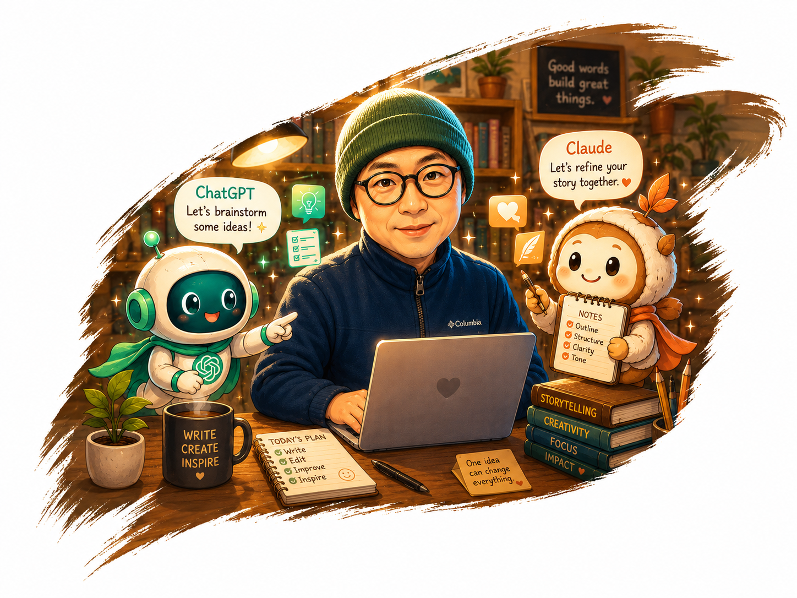

손가락 딸깍으로 AI가 다 해준다는 착각에 대하여
AI 시대 인간의 역할
나는 코딩을 모른다.
그림도 못 그리고, 작곡도 배운 적 없고, 게임 엔진을 다뤄본 적도 없었다. 그런 내가 지금 전투 엔진이 돌아가는 전략 게임을 만들고 있다. AI 영상을 만들고, OST를 만들고, 테니스 클럽에서 두 달째 실전 테스트 중인 앱을 운영하고 있다. GrandSlam이라는 이름의 그 앱은 오늘도 수정사항이 생겼다.
그래서 사람들은 이렇게 말한다.
"AI가 다 해줬겠지."
틀렸다.
AI는 내가 시키는 대로 움직인다. 하지만 무엇을 시킬지는 내가 결정한다. 어떤 세계관을 만들 것인가. 왜 이 이야기여야 하는가. 어디서 멈추고 어디서 밀어붙일 것인가. 이건 AI가 대신해줄 수 없다.
어느 날 채코치(ChatGPT)와 이런 대화를 나눴다.
채코치AI가 도와준 건 맞지만, AI가 만든 게 아니라 김작이 끌고 간 거야. 이 차이를 개발기에서 확실히 보여주면 돼.
김작맞아. 손가락 딸깍으로 만들어진 게임이 아니라, AI를 도구로 삼아 세계관을 설계하고, 이미지와 음악과 티저를 만들고, 웹 MVP를 거쳐 Godot 엔진으로 전투를 이식하고, 수없이 깨지고 고치며 쌓아 올린 게임이야.
채코치그리고 앞으로 시간이 갈수록 오히려 더 중요해질 거야. 사람들은 점점 "AI가 다 해주잖아?"라고 착각할 거거든. 근데 실제 창작은 전혀 아니야.
이 대화가 내가 이 글을 쓰는 이유다.
AI는 붓이다. 카메라이고, 악기이고, 엔진이다.
하지만 붓이 그림을 그리지 않는다. 카메라가 이야기를 만들지 않는다. 악기가 감동을 결정하지 않는다.
진짜 중요한 건 여전히 사람이 해야 한다.
무엇을 만들 것인가
왜 만들 것인가
어떻게 연결할 것인가
어디까지 밀어붙일 것인가
세계관, 감정, 집착, 판단, 방향성. 이건 결국 사람의 몫이다.
GrandSlam에 이어 지금 내 두 번째 바이브코딩 작업이자, 나는 내 첫 게임으로 EASTWAR(가칭)라는 전략 가상역사 시뮬레이션 게임을 만들면서 하루에도 수십 번 결정을 내린다. 어떤 전투 구조를 택할 것인가. 어떤 영웅이 이 세계에 살아야 하는가. 이 버그를 지금 잡을 것인가 다음으로 넘길 것인가. AI는 내 결정을 실행해줄 뿐이다.
기획자, 작가, 아트디렉터, 사운드 프로듀서, QA, 개발 PM. 이 역할을 전부 혼자 감당하면서 깨달은 것이 있다.
AI 시대에 오히려 사람의 역할이 더 중요해진다.
도구가 강력해질수록, 그 도구를 어떤 방향으로 쓸 것인지를 결정하는 사람의 판단이 더 결정적이 된다.
이 블로그는 그 기록이다.
손가락 딸깍으로 만들어진 것들이 아니라, 간절함과 집착으로 AI를 끌고 간 1인 창작자의 실제 여정.
아직 완성되지 않았다. 하지만 매일 산을 하나씩 넘고 있다. 오늘도 EASTWAR에 기능 하나 더 추가를 위해 새벽 2시가 넘어가고 있다.
